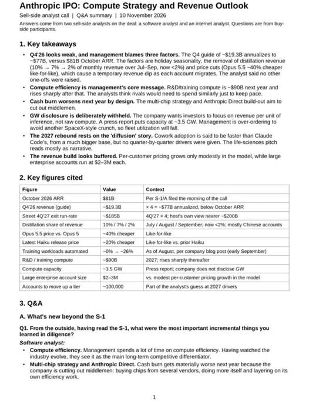

過去 26 小時共 3 則貼文，沒有業配。兩則是 Anthropic 上市前賣方分析師電話會的重點整理（文字＋一張摘要圖），一則是 NVIDIA 官方宣布執行長交接：黃仁勳即刻辭職，由財務長 Colette Kress 代理執行長。
Anthropic @barclays
- Q426 營收 guide 193 億美元，年化約 770 億，低於 10 月 ARR 的 810 億
- 三個原因導致偏弱，假期淡季、蒸餾營收移除、降價
- 蒸餾占月營收從 7 月 10% 降到 9 月 2%
- Opus 5.5 便宜約 40%，新版 Haiku 便宜約 20%，客戶換模型時營收先掉、約兩週回升
- 訓練支出 2027 年約 900 億美元，之後再大幅上升
- 明年現金消耗刻意擴大，用於多晶片策略與 Anthropic Direct 自建
- 公司傾向不揭露 GW，媒體報導約 3.5 GW；刻意超額下單，稼動率會下降
- Street 估 4Q27 年化約 1850 億，約為 Q426 的 2.4 倍
- 成長得靠 Cowork 擴散，採用速度比 Claude Code 快，但管理層沒給逐季指引
- 執行長大推生命科學，但分析師認為偏行銷，營收貢獻小
圖 source https://x.com/outliercapx/status/2120547916422996132/photo/1

圖為英文摘要〈Anthropic IPO: Compute Strategy and Revenue Outlook〉，標註「Sell-side analyst call｜Q&A summary｜10 November 2026」，回答者為一位軟體分析師與一位網路分析師。重點數字表：10 月 ARR 810 億美元、Q4'26 營收指引約 193 億（×4 ≈ 770 億）、Street 估 4Q'27 年化約 1850 億、蒸餾占營收 7/8/9 月 10%/7%/<2%（多為中國帳戶）、Opus 5.5 同級便宜約 40%、新 Haiku 便宜約 20%、2027 研發／訓練算力約 900 億、算力約 3.5 GW（媒體報導）、大型企業客戶年付 200–300 萬美元。
講解
這份資料是什麼。Anthropic 已送件 S-1 準備在 Nasdaq 掛牌（代號 ANT，承銷商高盛、摩根士丹利，媒體報導 11 月 20 日前後上市，估值最高約 1.4 兆美元）。上市前承銷團的「賣方分析師」會開電話會跟買方法人講他們做盡調後的看法，這張圖就是這類電話會的二手摘要。要注意兩點：第一，貼文寫「@barclays」，但圖本身只寫兩位賣方分析師，沒標出是哪家，而 Barclays 是否在承銷團我沒查到可確認的資料；第二，193 億的 Q4 指引並不在 S-1 裡，是管理層在盡調會上口頭給的，目前的公開報導（如 StreetSignal）也明說是轉述、作者未在場，屬於「市場流傳的數字」而非公司正式揭露。
為什麼 Q4 看起來比 ARR 還低。ARR（年化經常性營收）是把某一個月的營收乘以 12，S-1 揭露 10 月底約 810 億。Q4 營收 193 億乘以 4 只有約 770 億，等於第四季平均月營收低於 10 月水準。管理層給三個原因：(1) 假期淡季，企業工程師 12 月放假，API 用量下降，S-1 顯示去年假期客戶支出掉約兩成；(2) 移除「蒸餾」營收——蒸餾是指別家用 Claude 的輸出來訓練自己的模型，Anthropic 封鎖這類用量（主要是中國帳戶），這塊從 7 月的 10% 降到 9 月不到 2%，等於主動砍掉一塊收入；(3) 降價——Opus 5.5 同等能力比前代便宜約 40%，新 Haiku 便宜約 20%，客戶換到新模型時，同樣工作量付的錢先變少，要等用量因為便宜而增加（約兩週）才補回來。這是典型的「價格彈性」：降價短期傷營收，長期靠用量放大。
錢花在哪。2027 年訓練算力支出約 900 億美元，之後還會大幅上升；明年現金消耗是刻意擴大，用在「多晶片策略」（同時採購 NVIDIA、Google TPU、Amazon Trainium 等，不綁單一供應商）與 Anthropic Direct（自己做更多雲端服務，減少中間商抽成）。公司不揭露裝機 GW 數，媒體估約 3.5 GW；管理層承認刻意超額下單算力，以避免類似 SpaceX 式的供給卡關，代價是稼動率（實際用到的比例）會下降——這對毛利是壓力，也是 S-1 風險因子提到「近 9000 億美元算力承諾、部分融資不在公司掌控」的背景。
成長故事。Street 預估 4Q27 年化約 1850 億，約為 Q4'26 的 2.4 倍，管理層只說靠 Cowork（Claude 處理一般知識工作的能力）擴散、採用速度比 Claude Code 快，但沒給逐季拆解，所以這個數字目前比較像分析師假設而非公司承諾。生命科學是執行長大力推的方向，但分析師認為短期偏行銷、營收貢獻小。圖中另一點值得留意：模型裡單一客戶的價格成長很溫和，成長主要靠客戶數與用量擴大，大型企業客戶年付約 200–300 萬美元。
怎麼看。這份摘要的立場算是幫弱勢的 Q4 指引找合理解釋（一次性因素＋刻意選擇），但反方會說：ARR 與季營收出現落差、算力超額下單與現金消耗擴大，都讓上市估值更依賴「2027 年營收翻倍以上」這個尚未被管理層逐季背書的假設。數字皆為二手轉述，以最終公開文件為準。
https://nvidianews.nvidia.com/news/nvidia-announces-ceo-transition
講解
貼文只有連結，內容是 NVIDIA 11 月 12 日官方新聞稿：黃仁勳辭去總裁、執行長與董事職務，即刻生效；財務長 Colette Kress 擔任代理執行長並兼任財務長，直到找到正式接班人；董事會將考慮內外部人選，沒給時間表。同時任命 Harvey Jones（前 Synopsys 執行長、1993 年起任董事）為公司史上第一位董事長。新聞稿沒有說明辭職原因，也沒有重申財測，只說第三季（FY2027 Q3）財報照原訂 11 月 17 日（美西時間）公布。
背景（新聞稿以外，來自媒體報導）。依 ABC、TechCrunch 的整理：10 月底 NYT 報導黃仁勳與一位女性關係密切，WSJ 報導美、新、台情報官員有理由相信她可能是中國間諜；11 月 8 日黃仁勳發內部信承認不忠並道歉，董事會啟動獨立調查，檢視他是否成為外國情報行動的目標，並表示「沒有理由相信」國安或公司機密外洩；中國外交部否認間諜說法；11 月 11 日 NYT 再報導他與一位向他匯報的公司高管也有關係，WSJ 報導董事會準備讓他下台；隔天即宣布辭職。要分清楚：已確認的只有「承認不忠」與「辭職」；對方是間諜、第二段關係、是否有機密外洩，目前都是匿名消息來源的報導或指控，尚未證實。TechCrunch 報導消息公布後盤前股價跌逾 11%，自前一週起市值已蒸發超過 3000 億美元。
對投資人的意義。創辦人兼執行長 33 年突然離開，是「關鍵人物風險」實現：短期影響是治理與信任（董事會調查、國會可能傳喚、潛在股東訴訟），中期才是戰略——NVIDIA 的產品路線圖與客戶訂單（如上則 Anthropic 這類大買家的算力需求）不會一夕改變，Kress 長期掌財務、熟悉法人，市場會先看 11/17 財報與財測是否如常、以及正式接班人選。另一方面，事件牽涉中國情報指控，也可能讓美國對 NVIDIA 對中銷售的政策更敏感。